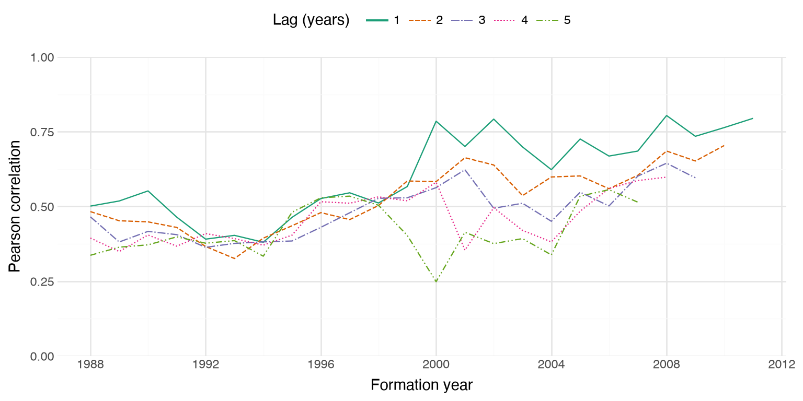
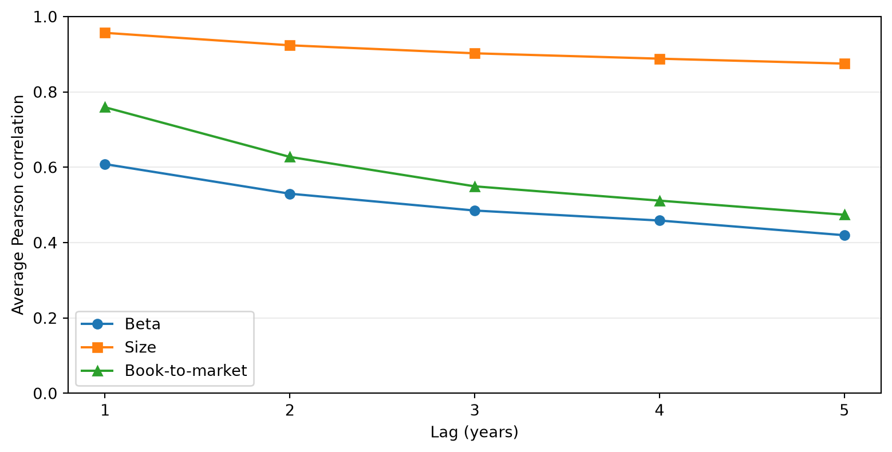

import polars as pl
from eap_pl import build_annual_panel
annual_panel = build_annual_panel()4 Persistence Analysis
WarningEarly draft
This chapter is an early draft and still needs a thorough review. The APIs used in the examples may change as I continue working on the book.
In Chapter 4, Bali et al. (2016) measure persistence by correlating a stock characteristic with its own future value across stocks. I use the December 1988–2012 panel from Chapter 2, including its signed book-to-market ratio.
4.1 Implementation
4.1.1 Periodic Cross-Sectional Persistence
For a lag of \(\tau\) years, match stocks by permno in years \(t\) and \(t+\tau\). For each characteristic \(X\), keep the set \(\mathcal S_{t,\tau}\) of stocks with finite values of \(X\) in both years. Within this matched sample, winsorize each year’s values separately at the 0.5th and 99.5th percentiles. Using the winsorized values and their cross-sectional means, the Pearson correlation is
\[ \rho_{t,t+\tau}(X)= \frac{\displaystyle\sum_{i\in\mathcal S_{t,\tau}} (X_{i,t}-\bar X_t)(X_{i,t+\tau}-\bar X_{t+\tau})} {\displaystyle\sqrt{\sum_{i\in\mathcal S_{t,\tau}}(X_{i,t}-\bar X_t)^2} \sqrt{\sum_{i\in\mathcal S_{t,\tau}}(X_{i,t+\tau}-\bar X_{t+\tau})^2}}. \tag{4.1}\]
Shift the future year’s join key back by the lag so that each stock’s observation in \(t+\tau\) joins its observation in \(t\). Use the same winsorized Pearson correlation as in Chapter 3.
from eap_pl import winsorized_corr
measures = ["Beta", "Size", "BM"]
lags = range(1, 6)
characteristics = annual_panel.select("permno", "year", *measures)
def annual_persistence(lag):
future = characteristics.with_columns(year=pl.col("year") - lag)
return (
characteristics.join(future, on=["permno", "year"], suffix="_future", validate="1:1")
.group_by("year")
.agg(
winsorized_corr(pl.col(x), pl.col(f"{x}_future")).fill_nan(None).alias(x)
for x in measures
)
.with_columns(pl.lit(lag).alias("Lag"))
)
annual = pl.concat([annual_persistence(lag) for lag in lags]).sort("Lag", "year")Code
beta_by_year = (
annual.pivot(on="Lag", index="year", values="Beta", sort_columns=True)
.sort("year")
.rename({"year": "Year", **{str(lag): f"Lag {lag}" for lag in lags}})
)
beta_by_year.eap.show_table()| Year | Lag 1 | Lag 2 | Lag 3 | Lag 4 | Lag 5 |
|---|---|---|---|---|---|
| 1988 | 0.50 | 0.48 | 0.47 | 0.39 | 0.34 |
| 1989 | 0.52 | 0.45 | 0.38 | 0.35 | 0.36 |
| 1990 | 0.55 | 0.45 | 0.42 | 0.40 | 0.37 |
| 1991 | 0.46 | 0.43 | 0.41 | 0.37 | 0.40 |
| 1992 | 0.39 | 0.37 | 0.36 | 0.41 | 0.38 |
| 1993 | 0.40 | 0.33 | 0.38 | 0.39 | 0.39 |
| 1994 | 0.38 | 0.39 | 0.38 | 0.37 | 0.33 |
| 1995 | 0.46 | 0.44 | 0.38 | 0.40 | 0.48 |
| 1996 | 0.53 | 0.48 | 0.43 | 0.52 | 0.53 |
| 1997 | 0.55 | 0.46 | 0.48 | 0.51 | 0.53 |
| 1998 | 0.51 | 0.50 | 0.53 | 0.53 | 0.50 |
| 1999 | 0.57 | 0.59 | 0.53 | 0.52 | 0.40 |
| 2000 | 0.79 | 0.58 | 0.56 | 0.58 | 0.25 |
| 2001 | 0.70 | 0.66 | 0.62 | 0.35 | 0.41 |
| 2002 | 0.79 | 0.64 | 0.49 | 0.50 | 0.38 |
| 2003 | 0.70 | 0.54 | 0.51 | 0.42 | 0.39 |
| 2004 | 0.62 | 0.60 | 0.45 | 0.38 | 0.34 |
| 2005 | 0.73 | 0.60 | 0.55 | 0.48 | 0.53 |
| 2006 | 0.67 | 0.56 | 0.50 | 0.56 | 0.56 |
| 2007 | 0.69 | 0.60 | 0.60 | 0.59 | 0.51 |
| 2008 | 0.80 | 0.69 | 0.64 | 0.60 | |
| 2009 | 0.73 | 0.65 | 0.60 | ||
| 2010 | 0.76 | 0.70 | |||
| 2011 | 0.79 |
The lags are in years. The blank cells in Table 4.1 require a comparison year beyond 2012. The companion plot in Figure 4.1 shows how much beta persistence varies across formation years, even at the same lag.
Code
from plotnine_polars import aes
(
annual.with_columns(lag=pl.col("Lag").cast(pl.String))
.ggplot(aes(x="year", y="Beta", color="lag", linetype="lag"))
.geom_line()
.scale_x_continuous(breaks=range(1988, 2013, 4))
.scale_y_continuous(expand=(0, 0))
.coord_cartesian(ylim=(0, 1))
.scale_color_brewer(type="qual", palette="Dark2")
.scale_linetype_manual(values=["solid", "dashed", "dashdot", "dotted", (0, (5, 2, 1, 2, 1, 2))])
.labs(x="Formation year", y="Pearson correlation", color="Lag (years)", linetype="Lag (years)")
.theme_minimal()
.add_theme(figure_size=(8, 4), legend_position="top")
)
4.1.2 Average Cross-Sectional Persistence
Give each formation year equal weight. With \(N\) years indexed from 1 through \(N\), the average persistence at lag \(\tau\) is
\[ \rho_\tau(X)=\frac{1}{N-\tau}\sum_{t=1}^{N-\tau}\rho_{t,t+\tau}(X). \tag{4.2}\]
Here \(N=25\), so the one-year estimate averages 24 correlations and the five-year estimate averages 20. Table 4.2 reports the averages for beta and Table 4.3 puts all three characteristics side by side.
average = annual.group_by("Lag").agg(pl.col(measures).mean()).sort("Lag")Code
pl.DataFrame({
f"Lag {lag}": [beta] for lag, beta in average.select("Lag", "Beta").iter_rows()
}).eap.show_table()| Lag 1 | Lag 2 | Lag 3 | Lag 4 | Lag 5 |
|---|---|---|---|---|
| 0.61 | 0.53 | 0.49 | 0.46 | 0.42 |
4.2 Interpreting Persistence
Low beta persistence can reflect changing market exposures, noisy estimates, or both. Overlapping estimation windows can raise the correlation because the two estimates use some of the same returns. Here the December 12-month betas use daily returns from separate calendar years. The set of stocks with valid measurements at both dates can also change with the lag, so differences across lags reflect both the time between measurements and the stocks observed at both dates.
4.3 Presenting Persistence
Code
average.rename({"Lag": "Lag (years)", "BM": "Book-to-market"}).eap.show_table()| Lag (years) | Beta | Size | Book-to-market |
|---|---|---|---|
| 1 | 0.61 | 0.96 | 0.76 |
| 2 | 0.53 | 0.92 | 0.63 |
| 3 | 0.49 | 0.90 | 0.55 |
| 4 | 0.46 | 0.89 | 0.51 |
| 5 | 0.42 | 0.88 | 0.47 |
Figure 4.2 plots the averages from Table 4.3. Size is the most persistent characteristic at every lag. Its average correlation falls from 0.96 at one year to 0.88 at five years. At five years, beta and book-to-market are at 0.42 and 0.47.1
Code
(
average.rename({"BM": "Book-to-market"})
.unpivot(index="Lag", variable_name="characteristic", value_name="correlation")
.with_columns(pl.col("characteristic").cast(pl.Enum(["Beta", "Size", "Book-to-market"])))
.ggplot(aes(x="Lag", y="correlation", color="characteristic"))
.geom_line()
.geom_point(aes(shape="characteristic"))
.scale_x_continuous(breaks=lags)
.scale_y_continuous(expand=(0, 0))
.coord_cartesian(ylim=(0, 1))
.scale_color_brewer(type="qual", palette="Dark2")
.scale_shape_manual(values=["o", "s", "^"])
.labs(x="Lag (years)", y="Average Pearson correlation", color="", shape="")
.theme_minimal()
.add_theme(figure_size=(8, 4), legend_position="top")
)
4.4 Summary
References
The book-to-market correlations are 0.02 to 0.05 higher across the five lags than in BEM Table 4.3. At five years the correlation is 0.47 here and 0.43 in BEM.↩︎